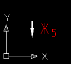

При ее выполнении задаются две точки:

Рисунок 1 — Результат выполнения команды LOOK.
Символы обозначения для направления взгляда в формируются в алфавитном порядке.
Для редактирования символов обозначения взгляда используйте стандартные средства редактирования ACAD.
Для установки текущего генерируемого символа обозначения взгляда используйте команду INDEX.
Смотри также команды: